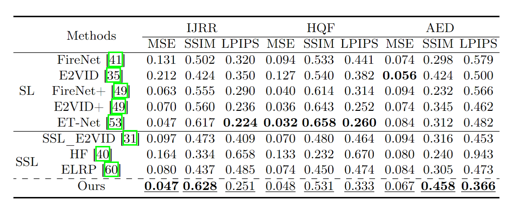

Revisit Event Generation Model: Self-Supervised Learning of Event-to-Video Reconstruction with Implicit Neural Representations
ECCV 2024
-
Zipeng Wang
AI Thrust, HKUST(GZ)
-
Yunfan Lu
AI Thrust, HKUST(GZ)
-

Addison Lin Wang
AI & CMA Thrust, HKUST(GZ)
Dept. of CSE, HKUST

Abstract
Reconstructing intensity frames from event data while maintaining high temporal resolution and dynamic range is crucial for bridging the gap between event-based and frame-based computer vision. Previous approaches have depended on supervised learning on synthetic data, which lacks interpretability and risk over-fitting to the setting of the event simulator. Recently, self-supervised learning (SSL) based methods, which primarily utilize per-frame optical flow to estimate intensity via photometric constancy, has been actively investigated. However, they are vulnerable to errors in the case of inaccurate optical flow. This paper proposes a novel SSL event-to-video reconstruction approach, dubbed EvINR, which eliminates the need for labeled data or optical flow estimation. Our core idea is to reconstruct intensity frames by directly addressing the event generation model, essentially a partial differential equation (PDE) that describes how events are generated based on the time-varying brightness signals. Specifically, we utilize an implicit neural representation (INR), which takes in spatiotemporal coordinate (x, y, t) and predicts intensity values, to represent the solution of the event generation equation. The INR, parameterized as a fully-connected Multi-layer Perceptron (MLP), can be optimized with its temporal derivatives supervised by events. To make EvINR feasible for online requisites, we propose several acceleration techniques that substantially expedite the training process. Comprehensive experiments demonstrate that our EvINR surpasses previous SSL methods by 38% w.r.t. Mean Squared Error (MSE) and is comparable or superior to SoTA supervised methods.
Overview
A fully connected MLP is used to implicitly solve the event generation equation. The temporal gradient of the MLP is supervised by temporal intensity changes of events, and the spatial gradient is penalized to reduce noise.
Quantitative Results
Comparison of quantitative results on the IJRR, HQF, and AED datasets. Bold values indicate the best results among all methods, while underlined values indicate the best results among SSL methods.
Qualitative Results
Qualitative comparison with baseline methods on IJRR(Row 1&2), HQF (Row 3&4) and AED(Row 5&6).
BibTeX
@article{wang2024EvINR,
title={Revisit Event Generation Model: Self-Supervised Learning of Event-to-Video Reconstruction with Implicit Neural Representations},
author={Wang, Zipeng and Lu, Yunfan and Wang, Lin},
journal={ECCV},
year={2024}
}